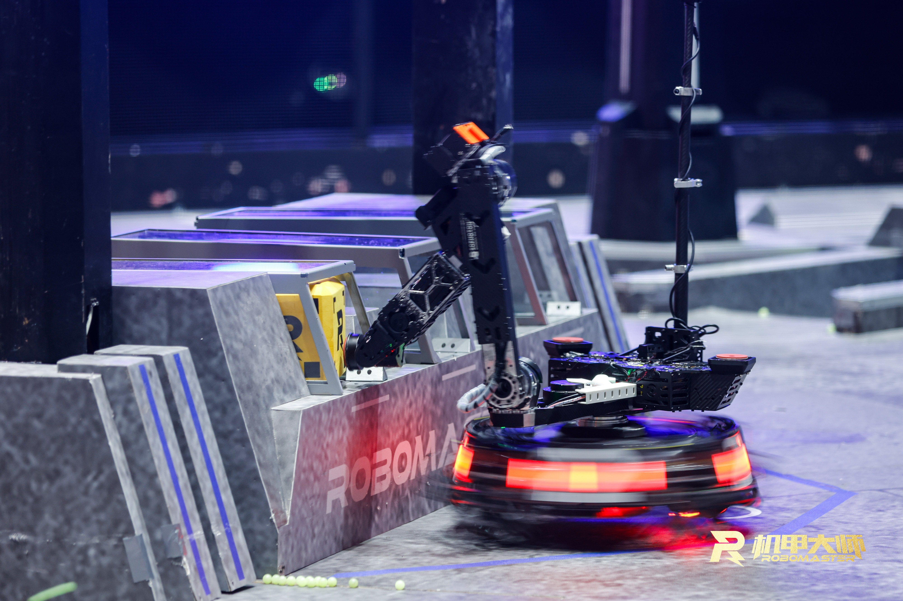
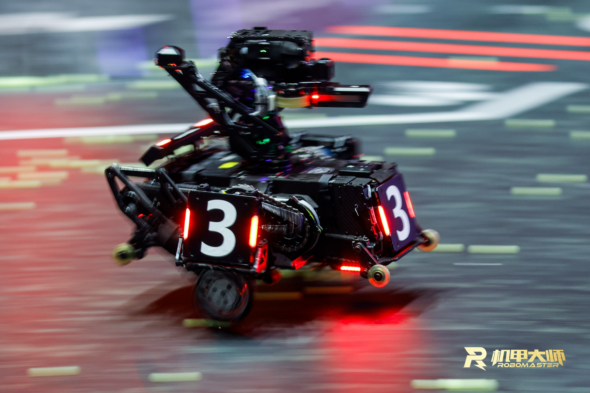
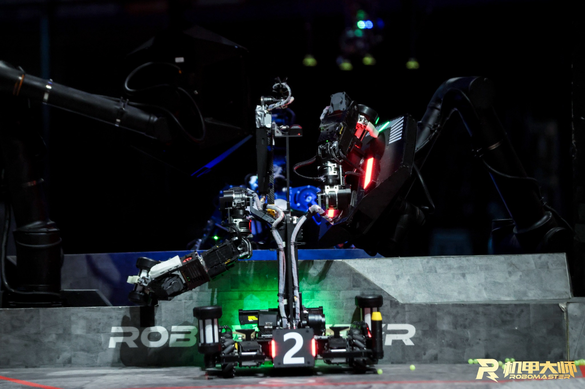

Projects
Project Experience
Electronics and Control Division of Team Jiaoloong
Deputy Head (Sep 2025-Present); Member (Sep 2024-Aug 2025)
Control of a 6-DOF Robot Arm on a Swerve Drive Chassis
Nov 2024-Oct 2025
- Programmed an STM32 microcontroller for Cartesian pose interpolation through multiple waypoints.
- Integrated Manipulator Dynamics Compensation into the arm controller.
- Implemented forward and inverse kinematics for a swerve drive chassis.

Modeling and Simulation of a Wheeled Bipedal Robot
Nov 2025-Dec 2025
- Modeled a wheeled bipedal robot with parallel leg mechanisms as a W-SLIP system.
- Applied an NMPC controller to the robot in Gazebo Simulator.

Development of a Foldable Dual-Arm Robot
May 2026-Aug 2026
- Co-designed the kinematic configuration and selected the joint actuators for both manipulators.
- Designed the robot’s electrical architecture and led the electrical wiring.
- Demonstrated impedance control for part assembly, including a translation and two sequential rotations.
